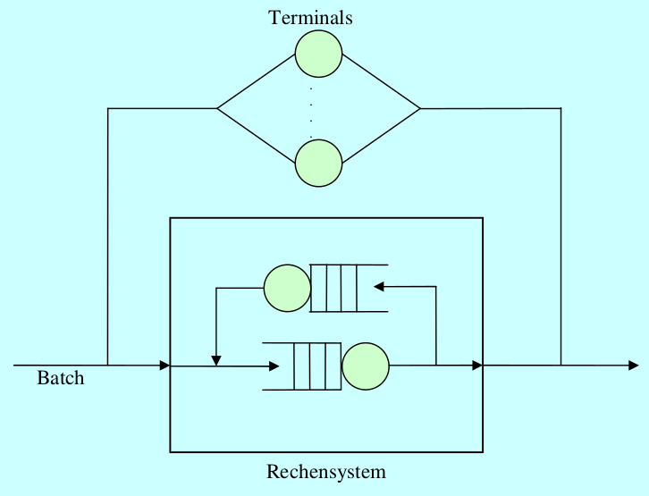

3.2.7
Die Arbeitslast der vorherigen Aufgabe werde folgendermaßen modifiziert:
- die Zahl der Terminalbenutzer steige auf 40,
- ihre mittlere Denkzeit ist 15 s,
- die mittlere Dialogantwortzeit sei 5 s,
- die mittlere Bedienzeit der einen Magnetplatte sei 20 ms,
- jeder Dialogauftrag erzeugt durchschnittlich zehn Plattenzugriffe.
Zusätzlich zu der Dialoglast existiere nun eine Batch-Last. Die einzelnen Batch-Aufträge betreten das System, werden von ihm bearbeitet, und verlassen es wieder. Dabei erzeugt jeder Batch-Auftrag durchschnittlich fünf Plattenzugriffe. Messungen ergaben, dass die Magnetplatte zu 90 % ausgelastet ist.
a) Skizzieren Sie die Situation in einem geeigneten Graphen!
Stimmt das ???

b) Berechnen Sie den Dialogdurchsatz X’!
X=N¯¯¯V+¯¯¯Z=405s+15s=2s
c) Berechnen Sie den gesamten Plattendurchsatz XP,ges !
UP=0.9
XP,ges=UP¯¯¯SP=0.920ms=45s
Man darf hier U als Durchsatz X verwenden, weil U < 1.
d) Berechnen Sie den durch den Dialogverkehr verursachten Plattendurchsatz X’P!
XP'=eP'⋅X'=10⋅2s=20s
e) Berechnen Sie den Stapeldurchsatz X durch das System!
XP+XP'=XP,ges
⇒XP=XP,ges−XP'=45−20s=25s
X=XPeP=25s5=5s